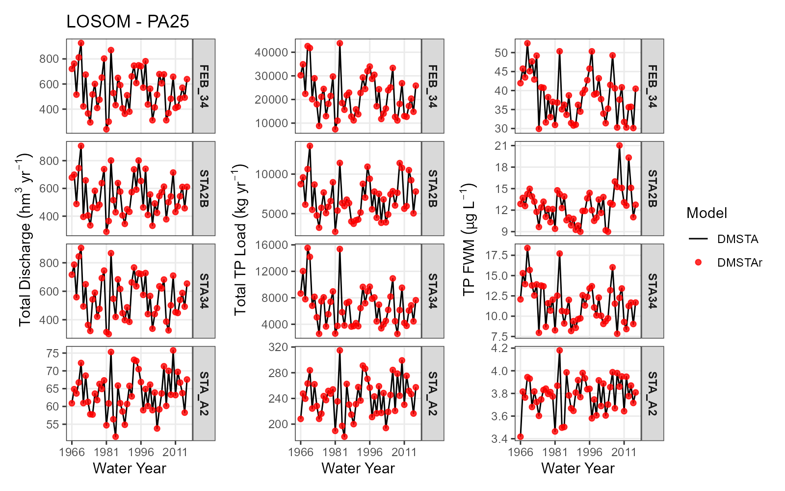
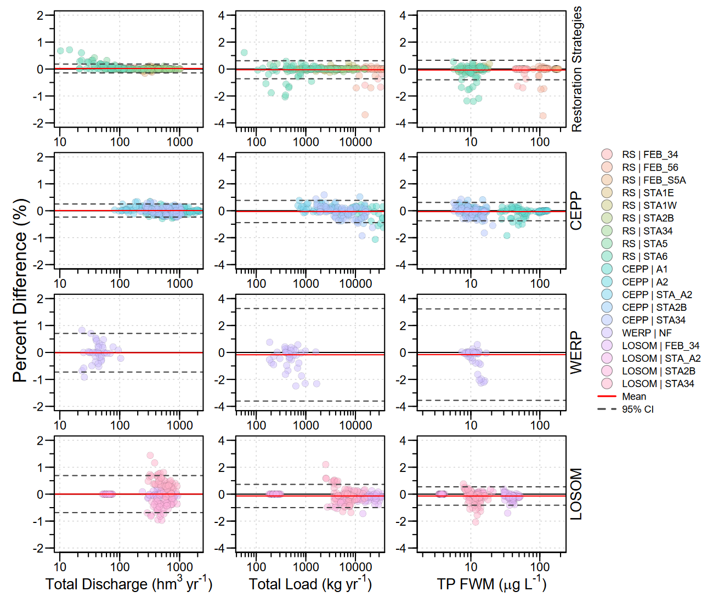

DMSTAr: Bringing a Legacy Wetland Water Quality Model into R
Everglades
water quality
wetlands
open science
modeling
Over the past several months, I have been working on something that sits squarely at the intersection of wetland biogeochemistry, Everglades restoration planning, and love of reproducible and open science: DMSTAr.
DMSTAr is an open-source R implementation of the Dynamic Model for Stormwater Treatment Areas, more commonly known as DMSTA. DMSTA has been used for years to simulate hydrologic routing and phosphorus removal in stormwater treatment wetlands, particularly in the Florida Everglades. It is a model that has been used in restoration planning, treatment wetland evaluations, and scenario analyses where water quantity and water quality have to be considered together. However, the legacy implementation exists as a spreadsheet/VBA-based workflow, which can make transparency, version control, reproducibility, and large-scale scenario testing cumbersome.
The goal of DMSTAr was not to create a new wetland water quality model or to reassess the assumptions behind DMSTA. Instead, the goal was more focused: translate the existing model behavior into a modular, script-based R framework while preserving the numerical behavior of the legacy implementation. In other words, DMSTAr is intended to reproduce DMSTA, but in a form that is easier to inspect, test, document, share, and integrate into modern scientific workflows.
Why translate DMSTA into R?
Spreadsheet models can be incredibly useful. They are accessible, familiar, and often become the practical backbone of applied environmental modeling. But as models become more complex, the spreadsheet environment can also become limiting. Logic can be distributed across cells, worksheets, macros, named ranges, and hidden dependencies. That makes it harder to know exactly what is happening at each step, harder to test individual pieces of model logic, and harder to run many scenarios in a consistent and reproducible way.
DMSTAr restructures that workflow into explicit R functions. Inputs are handled as data frames or lists, model configuration is defined in code, simulations return R objects, and intermediate states can be inspected directly. This makes the model easier to debug, easier to document, and easier to connect with the broader R ecosystem for data processing, visualization, sensitivity analysis, and reporting.
From an open science perspective, this was one of the major motivations. A model used in planning and decision support should be as transparent and reproducible as possible. Moving DMSTA into R does not automatically solve every modeling challenge, but it does make the implementation easier to examine and easier to build on.
What does DMSTAr do?
DMSTAr preserves the core structure of DMSTA while organizing the model into reusable functions. The package supports workflows that move from input data, to model configuration, to simulation execution. At a high level, DMSTAr includes tools to define model parameters, construct treatment wetland cells, validate model inputs, simulate hydrology and phosphorus dynamics at the cell level, run case-level simulations, and route flows and loads through networked configurations. Ultimately the package was designed around the same conceptual hierarchy used in DMSTA.
Preserving legacy behavior
The biggest challenges in translating a legacy model is deciding what “equivalent” means. For DMSTAr, the goal was not to produce a cleaner theoretical version of DMSTA or perfectly replicate VBA code to work in R. The goal was to preserve the behavior of the legacy model as closely as possible, including version-specific operational logic that affects hydrology and routing in the R environment.
DMSTAr includes support for multiple DMSTA version semantics through an explicit configuration parameter. This matters because some legacy DMSTA applications differ in operational details such as release gating, depth controls, inflow fraction handling, and offline/resting-period behavior. Those details may seem minor, but they can affect simulated water movement, phosphorus loads, and downstream performance metrics.
Rather than performing a simple line-by-line conversion of spreadsheet formulas and VBA code, the model translation focused on preserving governing equations, numerical integration procedures, execution logic, and model behavior. Spreadsheet-based calculations that depended on implicit cell relationships were reformulated as explicit state-space updates in R. That means the model states, fluxes, and intermediate values are much easier to inspect during simulation.
How well does DMSTAr reproduce DMSTA?
A major part of the development process was verification. DMSTAr was compared directly against legacy DMSTA outputs using identical input data, parameter values, initial conditions, and network structures. These comparisons included major Everglades planning applications such as Restoration Strategies, the Central Everglades Planning Project, the Western Everglades Restoration Project, and the Lake Okeechobee System Operating Manual.
Agreement was evaluated at both the time-series scale and the annual performance-metric scale. The comparison included total discharge, total phosphorus load, and flow-weighted mean total phosphorus concentration. Across the evaluated applications, DMSTAr reproduced legacy DMSTA behavior with negligible systematic bias and high agreement. For the overall comparison, 99.8% of annual total discharge estimates, 95.4% of annual total load estimates, and 96.1% of annual flow-weighted mean estimates were within ±1% symmetric percent difference.

That does not mean every intermediate calculation is bit-for-bit identical. Minor differences are expected when translating a macro-driven spreadsheet model into a scripted R implementation. These differences can arise from rounding, evaluation order, explicit time-stepping control, numerical precision, or edge-case handling. The important point is that those differences were small, bounded, and did not indicate a change in the underlying model formulation.
What is available now?
The DMSTAr source code is available on GitHub: DMSTAr GitHub repository. The repository provides access to the package source code, documentation, vignettes, and example workflows. At the time of writing, a draft manuscript is being prepare for submission to support the document the package developement, a separate repository contains code and supporting materials associated with the model comparison analysis. DMSTAr has also been submitted to CRAN as version 0.1.1. Until the CRAN version is available, the developement version can be installed from GitHub using
# install.packages("remotes")
remotes::install_github("SwampThingPaul/DMSTAr")A few caveats
DMSTAr is not intended to replace careful model review, calibration, or interpretation. The current work demonstrates implementation parity, not predictive performance or model adequacy for every possible application. If DMSTAr is applied to substantially different project configurations or future extensions, equivalence should continue to be verified.
Also, the DMSTAr package repository does not include the original DMSTA source code or the published DMSTA output files evaluated in the manuscript. Those outputs are publicly available through the Statewide Model Management System, with project-specific links provided in the manuscript supplemental materials.
Why this matters
For me, the value of DMSTAr is not simply that DMSTA can now be run in R. The bigger value is that a historically important wetland water quality modeling workflow can now be executed in a way that is more transparent, reproducible, testable, and easier to integrate with modern analysis pipelines.
That matters for Everglades restoration planning, where decisions often depend on comparing alternatives across hydrology, water quality, ecological response, and operational constraints. It also matters for open science. If models are going to inform public restoration decisions, then the implementation should be as accessible and reproducible as possible.
DMSTAr is one step in that direction. It preserves the core behavior of a legacy modeling tool while making the workflow more transparent and extensible for future analysis, scenario testing, and model development.
If you work with treatment wetlands, Everglades restoration planning, phosphorus modeling, or just enjoy seeing legacy environmental models brought into reproducible R workflows, feel free to check out the package, try the examples, and open an issue if something breaks.
Because, as always, the swamp deserves reproducible science.